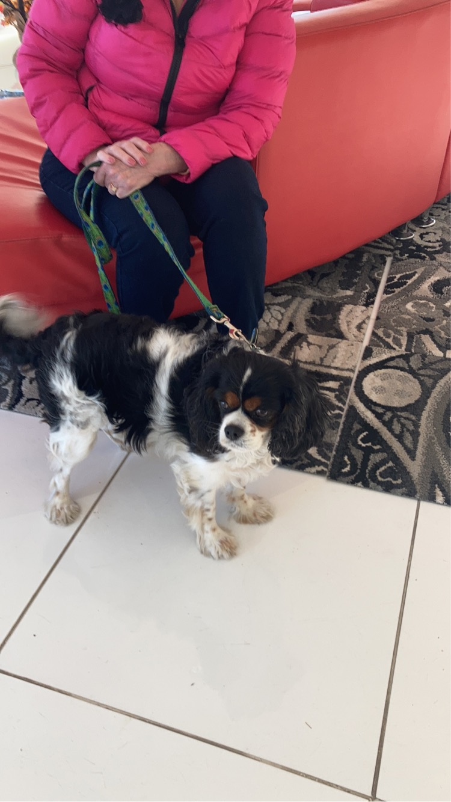
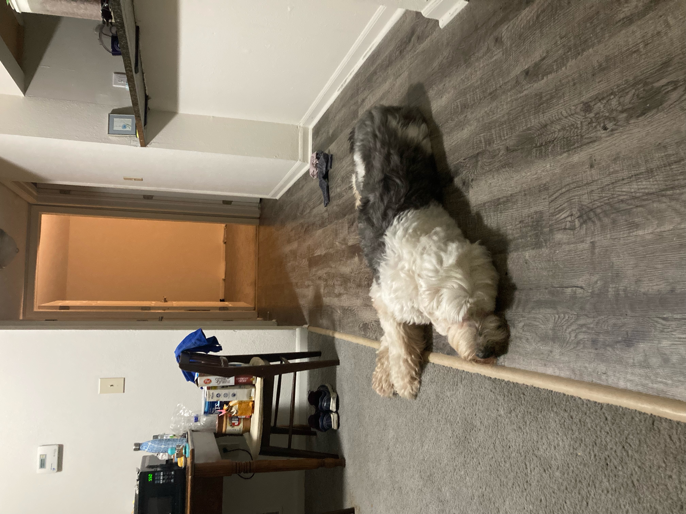

Bacon

This is a dog named Bacon, who belongs to a staff member in the School of Information.
Murphy
This is a dog named Murphy, who belongs to one of my neighbors in Ann Arbor.
Parley
This is a dog named Parley, who belongs to my aunt and uncle.
Planning for the Future
In pulling these photos for this website, I'm reminded of how much I want to be a dog owner (eventually). I would prioritize completing my graduate degree program and paying off student loans prior to pet ownership.